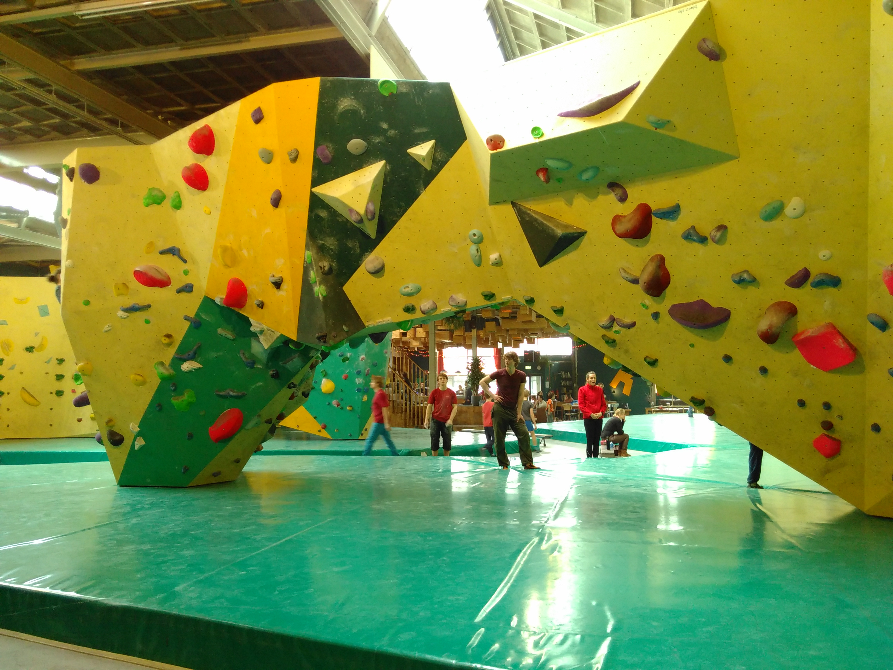
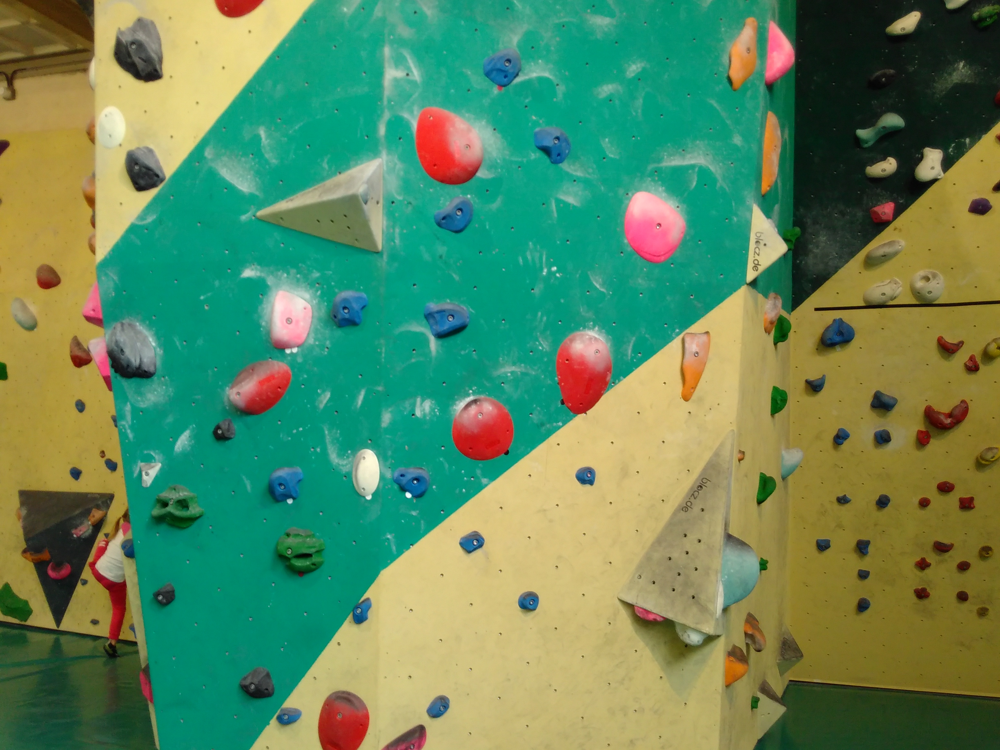
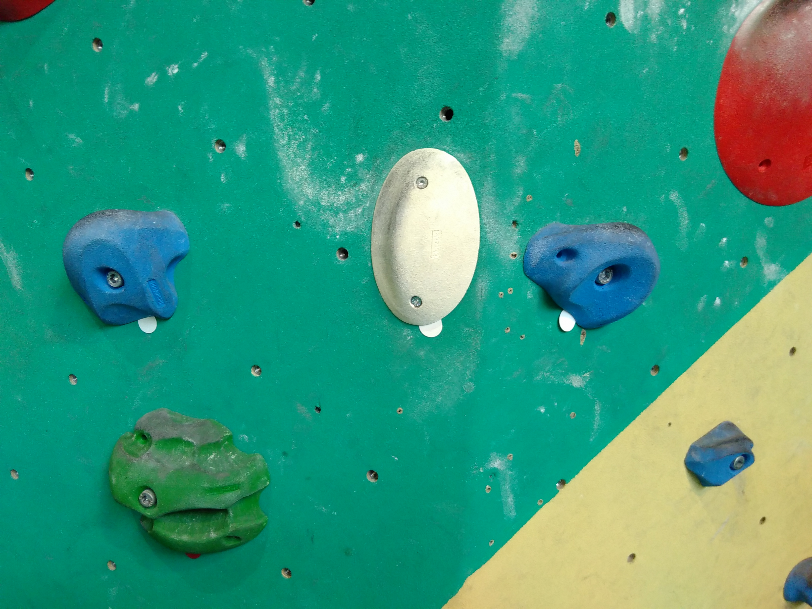
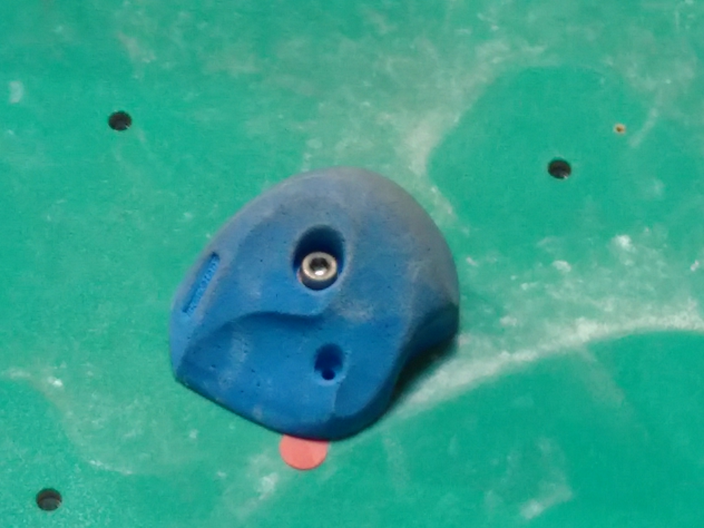
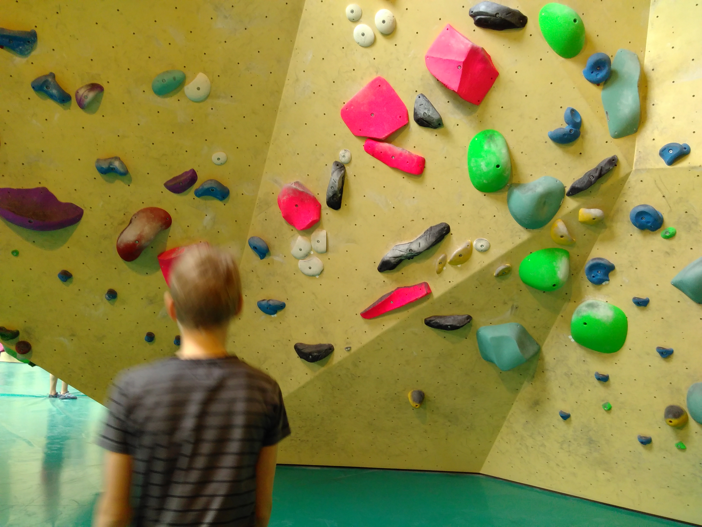

<h3>Kobus spreekbeurt Boulderen</h3>

<h1>Wat is boulderen?</h1>

<ul>
<li>klimmen van korte routes </li>
<li>indoor of buiten</li>
</ul>

<p><a href=http://kobusvijn.nl/overzicht.jpg ></a></p>

<h1>Regels</h1>

<ul>
<li>afstandhouden</li>
<li>niet over de matllopen </li>
</ul>

<p><p></p>

<h1>De routes</h1>

<ul>
<li>kleuren (makkelijk / moeilijk
<p>
<a href=http://kobusvijn.nl/blauwoverzicht.jpg ></a>
<p>
<a href=http://kobusvijn.nl/blauwstart.jpg ></a>
<p>
<a href=http://kobusvijn.nl/blauweinde.jpg ></a></li>
</ul>

<p><p></p>

<h1>Spullen</h1>

<ul>
<li>schoenen</li>
<li>pof (magnesium)</li>
<li>muur met grepen </li>
<li>borstel</li>
<li>de mat </li>
</ul>

<p><p>
<a href=http://kobusvijn.nl/rozeroute.jpg ></a></p>

<p><p>
<a href=https://vimeo.com/193948618>filmpje</a></p>

<h1>Vragen ?</h1>
